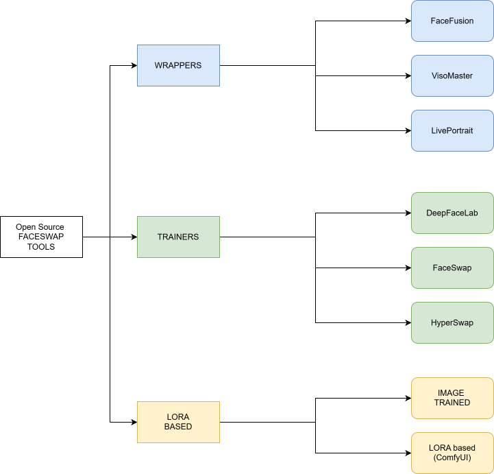

Overview
The face swap tool landscape divides into three operational categories. Standalone open-source applications handle the full swap pipeline internally — they are self-contained executables with their own model management and UI. Wrappers sit on top of these applications, adding batch control, API access, or tighter pipeline integration. LoRA-based approaches shift the paradigm entirely: rather than swapping a face post-generation, they condition the generation model on a face identity, producing cleaner results at the cost of additional training setup.
Standalone Applications
FaceFusion is the current standard for production face swap. It supports image and video input, multiple face detection backends, and a range of swap and enhancement models. Actively maintained with a web UI and CLI mode for pipeline integration.
VisoMaster offers a node-based interface designed for more granular control over the swap process — face selection, masking, and per-region enhancement are all exposed as discrete steps rather than a single operation.
DeepFaceLab is the original high-fidelity face swap tool. It requires explicit training on source and target video sets before swapping, which makes it significantly more time-intensive than inference-only tools but produces superior consistency on long-form video when trained correctly.
FaceSwap is the open-source counterpart to DeepFaceLab — same training-based approach, different codebase and community. Useful as a reference implementation and for operators already familiar with its workflow.
LivePortrait extends face swap into expression transfer: given a source identity and a driving video, it animates the source face to match the expressions and head motion of the driver. Used for generating facial performance from a static reference image rather than replacing a face in existing footage.
Wrappers
HyperSwap is a wrapper layer that integrates face swap functionality into broader production pipelines, adding batch processing, queue management, and API surface on top of underlying swap models. Reduces the manual overhead of running standalone tools across large shot lists.
LoRA-Based (ComfyUI)
LoRA-based face swap in ComfyUI conditions the generation model on a face identity rather than replacing a face after generation. A character LoRA trained on the target face is loaded into the Flux or SDXL pipeline via a Load LoRA node; the model generates the character's face directly as part of inference. The result has no hard swap boundary and integrates naturally with lighting and scene — but requires training time per character and is bound to the generation model it was trained against.